Table of Contents
2. Financial Statements, Taxes, and Cash Flow
2.1. Introducing Financial Statements
2.1.1. Defining the Financial Statement
2.1.2. Uses of the Financial Statement
2.1.3. Limitations of Financial Statements
2.1. The Income Statement
2.1.1. Elements of the Income Statement
2.1.2. Limitations of the Income Statement
2.1.3. Effects of GAAP on the Income Statement
2.1.4. Noncash Items
2.2. The Balance Sheet
2.2.1. Assets
2.2.2. Liabilities and Equity
2.2.3. Working Capital
2.2.4. Liquidity
2.2.5. Debt to Equity
2.2.6. Market Value vs. Book Value
2.2.7. Limitations of the Balance Sheet
2.3. Tax Considerations
2.3.1. Corporate Taxes
2.3.2. Tax Deductions
2.3.3. Depreciation
2.3.4. Individual Taxes
2.4. The Statement of Cash Flows
2.4.1. Cash Flow from Operations
2.4.2. Cash Flow from Investing
2.4.3. Cash Flow from Financing
2.4.4. Interpreting Overall Cash Flow
2.5. Other Statements
2.5.1. The Statement of Equity
2.5.2. Depreciation
2.5.3. Free Cash Flow
2.5.4. MVA and EVA
2. Financial Statements, Taxes, and Cash Flow
2.1. Introducing Financial Statements
2.1.1. Defining the Financial Statement
Financial statements report on a company's income, cash flow and equity.
Learning Objective
Define the purpose of a financial statement
Key Points
- Financial statements are formally prepared documents communicating an entity's financial activities to parties including investors, management and tax officials.
- An entity's financial statement typically includes four basic components: a balance sheet, income statement, cash flow statement, and statement of changes in equity.
- The balance sheet reports a point-in-time snapshot of the assets, liabilities and equity of the entity.
- An income statement reports on a company's expenses and profits to show whether the company made or lost money.
- The cash flow statement reports the flow of cash in and out of the business, dividing cash into operating, investing and financing activities.
- A statement of changes in equity explains the changes of the company's equity throughout the reporting period, including profits or losses, dividends paid and issue or redemption of stock.
Key Terms
- liabilities
- an obligation of an entity arising from past transactions or events, including any type of borrowing
- equity
- The residual claim or interest to investors in assets after all liabilities are paid. If liability exceeds assets, negative equity exists and can be purchased through stock.
- Assets
- economic resources that represent value of ownership that can be converted into cash (although cash itself is also considered an asset)
A financial statement is a formal report of the financial activities of a business, person, or other entity. Financial statements are a key component of accounting; the process of communicating information about a financial entity . Financial statements are presented in a structured manner with conventions accepted by accounting and regulatory personnel. An entity's financial statement typically includes four basic components: a balance sheet, income statement, cash flow statement, and statement of changes in equity:
- The company's balance sheet reports on a company's assets, liabilities and ownership equity. A balance sheet is often described as a "snapshot of a company's financial condition" at a single point in time. Balance sheets are usually presented with assets in one section and liabilities and net worth in the other.
- An income statement reports on a company's expenses and profits to show whether the company made or lost money. It also displays the revenues of a specific period, and the cost and expenses charged against these revenues. In contrast with the balance sheet, which represents a single moment in time, the income statement represents a period of time
- A cash flow statement shows how changes in income affect cash and cash equivalents, breaking the analysis down to operating, investing and financing. Essentially, the cash flow statement is concerned with the flow of cash in and out of the business. As an analytical tool, a cash flow statement is useful in determining the short-term viability of a company.
- A statement of changes in equity explains the company's equity throughout the reporting period. The statement breaks down changes in the owners' interest in the organization and in the application of retained profit or surplus from one accounting period to the next. Line items typically include profits or losses, dividends paid, redemption of stock, and any other items credited to retained earnings.
For complex entities, financial statements often include an extensive set of notes as an explanation of financial policies. The notes typically describe each item in detail. For example, the notes may explain financial figures or the accounting methods used to prepare the statement.
2.1.2. Uses of the Financial Statement
Financial statements are used to understand key facts about the performance and disposition of a business and may influence decisions.
Learning Objective
Explain how financial statements are used by different entities
Key Points
- Owners and managers use financial statements to make important long-term business decisions. For example: whether or not to continue or discontinue part of its business, to make or purchase certain materials, or to acquire or rent/lease certain equipment in the production of its goods.
- Prospective investors use financial statements to perform financial analysis, which is a key component in making investment decisions.
- A lending institution will examine the financial health of a person or organization and use the financial statement to decide whether or not to lend funds.
Key Term
- financial analysis
- Financial analysis (also referred to as financial statement analysis) refers to an assessment of the viability, stability, and profitability of an organization or project.
Uses of a Financial Statement
Financial Statements are used for a Multitude of Different Purposes
Readers of a financial statement are seeking to understand key facts about the performance and disposition of a business. They make decisions about the business based on their reading of the statements. Because financial statements are widely relied upon, they must be straightforward to read and understand.
For large corporations, these statements are often complex and may include an extensive set of notes to the financial statements and explanation of financial policies andmanagement discussion and analysis. The notes typically describe each item on the balance sheet, income statement, and cash flow statement in further detail. Notes to financial statements are considered an integral part of the financial statements.
Owners and managers frequently use financial statements to make important business decisions, for example:
- Whether or not to continue or discontinue part of the business.
- Whether to make or to purchase certain materials.
- Whether to acquire or to rent/lease certain equipment in the production of goods.
The documents are also helpful in making long-term decisions and as a source of historical records .
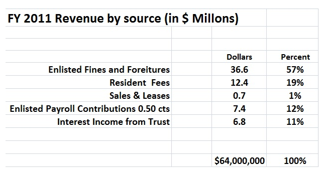{kind=link}
One of the uses of financial statements is as a budgeting tool, as in this example.
Other individuals and entities use financial statements too. For example:
- Prospective investors use financial statements to perform financial analysis, which is a key component in making investment decisions.
- A lending institution will examine the financial health of a person or organization and use the financial statement to decide whether or not to lend funds.
- Philanthropies may use financial statements of a non-profit as a component in determining where to donate funds.
- Government entities (tax authorities) need financial statements to ascertain the propriety and accuracy of taxes and other duties declared and paid by a company.
- Vendors who extend credit may use financial statements to assess the creditworthiness of the business.
- Employees also may use reports in making collective bargaining agreements
2.1.3. Limitations of Financial Statements
Financial statements can be limited by intentional manipulation, differences in accounting methods, and a sole focus on economic measures.
Learning Objective
Summarize the common limitations found in financial statements
Key Points
- One limitation of financial statements is that they are open to human interpretation and error, in some cases even intentional manipulation of figures to inflate economic performance.
- Another set of limitations of financial statements arises from different ways of accounting for activities across time periods and across companies, which can make comparisons difficult.
- Another limit to financial statements as a window into the creditworthiness or investment attractiveness of an entity is that financial statements focus solely on financial measures. Some argue for a "triple bottom line" including social and environmental measures.
Key Terms
- GAAP
- An acronym for "Generally Accepted Accounting Principles." The standard framework of guidelines for financial accounting used in any given jurisdiction; generally known as accounting standards or standard accounting practice.
- audit
- The verification of the financial statements of a legal entity intended to enhance the degree of confidence of intended users in the financial statements by providing reasonable assurance that the financial statements are presented fairly.
- corporate governance
- The roles and relationships between a company's management, its board, its shareholders and other stakeholders, and the goals for which the corporation is governed. Much of the contemporary interest in corporate governance is concerned with mitigation of the conflicts of interests and the nature and extent of accountability of people in the business.
Limitations of Financial Statements
The limitations of financial statements include inaccuracies due to intentional manipulation of figures; cross-time or cross-company comparison difficulties if statements are prepared with different accounting methods; and an incomplete record of a firm's economic prospects, some argue, due to a sole focus on financial measures.
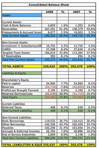{kind=link}
Financial statements can include a number of inaccuracies and limitations that affect the way a company can be viewed.
One limitation of financial statements is that they are open to human interpretation and error, in some cases even intentional manipulation of figures. In the United States, especially in the post-Enron era, there has been substantial concern about the accuracy of financial statements. High-profile cases in which management manipulated figures in financial statements to indicate inflated economic performance highlighted the need to review the effectiveness of accounting standards, auditing regulations, and corporate governance principles.
As a result, there has been renewed focus on the objectivity and independence of auditing firms. An audit of the financial statements of a public company is usually required for investment, financing, and tax purposes, and these are usually performed by independent accountants or auditing firms and included in the annual report. Additionally, in terms of corporate governance, managing officials like the CEO and CFO are personally liable for attesting that financial statements are not untrue or misleading, and making or certifying misleading financial statements exposes the people involved to substantial civil and criminal liability.
Another set of limitations of financial statements arises from different ways of accounting for activities across time periods and across companies. This can make it difficult to compare a company's finances across time or to compare finances across companies. Different countries have developed their own accounting principles, making international comparisons of companies difficult. However, the Generally Accepted Accounting Principles (GAAP), a set of guidelines and rules, are one means by which uniformity and comparability between financial statements is improved. Recently there has been a push toward standardizing accounting rules made by the International Accounting Standards Board (IASB).
Another limit to financial statements as a window into the creditworthiness or investment attractiveness of an entity is that financial statements focus solely on financial measures of health. Even traditional investment analysis incorporates information outside of the financial statements to make organizational assessments. However, other methods such as full cost accounting (FCA) or true cost accounting (TCA) argue that an organization's health cannot just be determined by its economic characteristics. Therefore, one needs to collect and present information about environmental, social, and economic costs and benefits (collectively known as the "triple bottom line") to make an accurate evaluation.
2.2. The Income Statement
2.2.1. Elements of the Income Statement
The income statement, or profit and loss statement (P&L), reports a company's revenue, expenses, and net income over a period of time.
Learning Objective
Construct a complete income statement
Key Points
- The income statement consists of revenues and expenses along with the resulting net income or loss over a period of time due to earning activities. The income statement shows investors and management if the firm made money during the period reported.
- The operating section of an income statement includes revenue and expenses. Revenue consists of cash inflows or other enhancements of assets of an entity, and expenses consist of cash outflows or other using-up of assets or incurring of liabilities.
- The non-operating section includes revenues and gains from non-primary business activities, items that are either unusual or infrequent, finance costs like interest expense, and income tax expense.
- The "bottom line" of an income statement is the net income that is calculated after subtracting the expenses from revenue. It is important to investors - also on a per share basis (as earnings per share, EPS) - as it represents the profit for the accounting period attributable to the shareholders.
Key Terms
- net income
- Gross profit minus operating expenses and taxes.
- gross profit
- The difference between net sales and the cost of goods sold.
- income statement
- a calculation which shows the profit or loss of an accounting unit during a specific period of time, providing a summary of how the profit or loss is calculated from gross revenue and expenses
- income bond
- a debt instrument where coupon payments are only made if the issuer can afford it
- statement of cash flows
- a financial document that shows how changes in balance sheet accounts and income affect cash and cash equivalents, and breaks the analysis down to operating, investing, and financing activities
Elements of the Income Statement
The income statement is a financial statement that is used to help determine the past financial performance of the enterprise, predict future performance, and assess the capability of generating future cash flows . It is also known as the profit and loss statement (P&L), statement of operations, or statement of earnings.
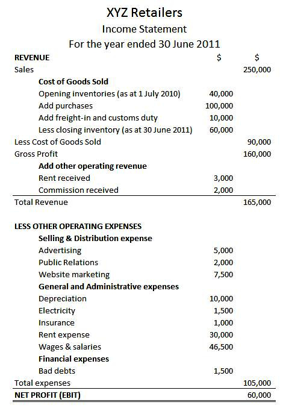{kind=link}
Expenses are listed on a company's income statement.
The income statement consists of revenues (money received from the sale of products and services, before expenses are taken out, also known as the "top line") and expenses, along with the resulting net income or loss over a period of time due to earning activities. Net income (the "bottom line") is the result after all revenues and expenses have been accounted for. The income statement reflects a company's performance over a period of time. This is in contrast to the balance sheet, which represents a single moment in time.
Methods for Constructing the Income Statement
The income statement can be prepared in one of two methods: single or multi-step.
The Single Step income statement totals revenues, then subtracts all expenses to find the bottom line.
The more complex Multi-Step income statement (as the name implies) takes several steps to find the bottom line. First, operating expenses are subtracted from gross profit. This yields income from operations. Then other revenues are added and other expenses are subtracted. This yields income before taxes. The final step is to deduct taxes, which finally produces the net income for the period measured.
Operating Revenues and Expenses
The operating section includes revenue and expenses. Revenue consists of cash inflows or other enhancements of the assets of an entity. It is often referred to as gross revenue or sales revenue. Expenses consist of cash outflows or other using-up of assets or incurrence of liabilities.
Elements of expenses include:
- Cost of Goods Sold (COGS): the direct costs attributable to goods produced and sold by a business. It includes items such as material costs and direct labor.
- Selling, General and Administrative Expenses (SG&A): combined payroll costs, except for what has been included as direct labor.
- Depreciation and amortization: charges with respect to fixed assets (depreciation) and intangible assets (amortization) that have been capitalized on the balance sheet for a specific accounting period.
- Research & Development (R&D): expenses included in research and development of products.
Non-operating Revenues and Expenses
The non-operating section includes revenues and gains from non- primary business activities (such as rent or patent income); expenses or losses not related to primary business operations (such as foreign exchange losses); gains that are either unusual or infrequent, but not both; finance costs (costs of borrowing, such as interest expense); and income tax expense.
In essence, if an activity is not a part of making or selling the products or services, but still affects the income of the business, it is a non-operating revenue or expense.
Reading the Income Statement
Certain items must be disclosed separately in the notes if it is material (significant). This could include items such as restructurings, discontinued operations, and disposals of investments or of property, plant and equipment. Irregular items are reported separately so that users can better predict future cash flows.
The "bottom line" of an income statement—often, literally the last line of the statement—is the net income that is calculated after subtracting the expenses from revenue. It is important to investors as it represents the profit for the year attributable to the shareholders. For companies with shareholders, earnings per share (EPS) are also an important metric and are required to be disclosed on the income statement.
2.2.2. Limitations of the Income Statement
Income statements have several limitations stemming from estimation difficulties, reporting error, and fraud.
Learning Objective
Demonstrate how the limitations of the income statement can influence valuation
Key Points
- Income statements include judgments and estimates, which mean that items that might be relevant but cannot be reliably measured are not reported and that some reported figures have a subjective component.
- With respect to accounting methods, one of the limitations of the income statement is that income is reported based on accounting rules and often does not reflect cash changing hands.
- Income statements can also be limited by fraud, such as earnings management, which occurs when managers use judgment in financial reporting to intentionally alter financial reports to show an artificial increase (or decrease) of revenues, profits, or earnings per share figures.
Key Terms
- LIFO
- Method for accounting for inventory. LIFO stands for last-in, first-out, and assumes that the most recently produced items are recorded as sold first.
- FIFO
- Method for for accounting for inventories. FIFO stands for first-in, first-out, and assumes that the oldest inventory items are recorded as sold first.
- matching principle
- According to the principle, expenses are recognized when obligations are (1) incurred (usually when goods are transferred or services rendered, e.g. sold), and (2) offset against recognized revenues, which were generated from those expenses, no matter when cash is paid out. In cash accounting—in contrast—expenses are recognized when cash is paid out.
Income statements are a key component to valuation but have several limitations: items that might be relevant but cannot be reliably measured are not reported (such as brand loyalty); some figures depend on accounting methods used (for example, use of FIFO or LIFO accounting); and some numbers depend on judgments and estimates. In addition to these limitations, there are limitations stemming from the intentional manipulation of finances.
One of the limitations of the income statement is that income is reported based on accounting rules and often does not reflect cash changing hands. This could be due to the matching principle, which is the accounting principle that requires expenses to be matched to revenues and reported at the same time. Expenses incurred to produce a product are not reported in the income statement until that product is sold. Another common difference across income statements is the method used to calculate inventory, either FIFO or LIFO.

Accounting for inventory can be done in different ways, leading to differences in statements.
In addition to good faith differences in interpretations and reporting of financial data in income statements, these financial statements can be limited by intentional misrepresentation. One example of this is earnings management, which occurs when managers use judgment in financial reporting and in structuring transactions to alter financial reports in a way that usually involves the artificial increase (or decrease) of revenues, profits, or earnings per share figures.
The goal with earnings management is to influence views about the finances of the firm. Aggressive earnings management is a form of fraud and differs from reporting error. Managers could seek to manage earnings for a number of reasons. For example, if a manager earns his or her bonus based on revenue levels at the end of December, there is an incentive to try to represent more revenues in December so as to increase the size of the bonus.
While it is relatively easy for an auditor to detect error, part of the difficulty in determining whether an error was intentional or accidental lies in the accepted recognition that calculations are estimates. It is therefore possible for legitimate business practices to develop into unacceptable financial reporting.
2.2.3. Effects of GAAP on the Income Statement
GAAP's assumptions, principles, and constraints can affect income statements through temporary (timing) and permanent differences.
Learning Objective
Apply the four basic GAAP principles when preparing financial statements
Key Points
- Items that create temporary differences due to the recording requirements of GAAP include rent or other revenue collected in advance, estimated expenses, and deferred tax liabilities and assets.
- Also there are events, usually one-time events, which create "permanent differences," such as GAAP recognizing as an expense an item that the IRS will not allow to be deducted.
- The four basic principles of GAAP can affect items on the income statement. These principles include the historical cost principle, revenue recognition principle, matching principle, and full disclosure principle.
Key Terms
- fair market value
- An estimate of the market value of a property, based on what a knowledgeable, willing, and unpressured buyer would probably pay to a knowledgeable, willing, and unpressured seller in the market. An estimate of fair market value may be founded either on precedent or extrapolation but is subjective. Fair market value differs from other ways of determining value, such as intrinsic and imposed value.
- deferred
- Of or pertaining to a value that is not realized until a future date, e.g. annuities, charges, taxes, income, either as an asset or liability.
Although most of the information on a company's income tax return comes from the income statement, there often is a difference between pretax income and taxable income. These differences are due to the recording requirements of GAAP for financial accounting (usually following the matching principle and allowing for accruals of revenue and expenses) and the requirements of the IRS's tax regulations for tax accounting (which are more oriented to cash).

GAAP and IRS accounting can differ.
Such timing differences between financial accounting and tax accounting create temporary differences. For example, rent or other revenue collected in advance, estimated expenses, and deferred tax liabilities and assets may create timing differences. Also, there are events, usually one time, which create "permanent differences," such as GAAP, which recognizes as an expense an item that the IRS will not allow to be deducted.
To achieve basic objectives and implement fundamental qualities, GAAP has four basic principles:
- The historical cost principle: It requires companies to account and report based on acquisition costs rather than fair market value for most assets and liabilities.
- The revenue recognition principle. It requires companies to record when revenue is (1) realized or realizable and (2) earned, not when cash is received.
- The matching principle. This governs the matching of expenses and revenues, where expenses are recognized, not when the work is performed or when a product is produced, but when the work or the product actually makes its contribution to revenue.
- The full disclosure principle. This suggests that the amount and kinds of information disclosed should be decided based on a trade-off analysis, since a larger amount of information costs more to prepare and use. GAAP reporting also suggests that income statements should present financial figures that are objective, material, consistent, and conservative.
2.2.4. Noncash Items
Noncash items, such as depreciation and amortization, will affect differences between the income statement and cash flow statement.
Learning Objective
Identify noncash items that can affect the income statement
Key Points
- Noncash items should be added back in when analyzing income statements to determine cash flow because they do not contribute to the inflow or outflow of cash like other gains and expenses eventually do.
- Depreciation refers to the decrease in value of assets and the allocation of the cost of assets to periods in which the assets are used--for tangible assets, such as machinery.
- Amortization is a similar process to deprecation when applied to intangible assets, such as patents and trademarks.
Key Terms
- obsolescence
- The state of being obsolete—no longer in use; gone into disuse; disused or neglected.
- amortization
- The distribution of the cost of an intangible asset, such as an intellectual property right, over the projected useful life of the asset.
- depreciation
- The measurement of the decline in value of assets. Not to be confused with impairment, which is the measurement of the unplanned, extraordinary decline in value of assets.
Noncash Items
Noncash items that are reported on an income statement will cause differences between the income statement and cash flow statement. Common noncash items are related to the investing and financing of assets and liabilities, and depreciation and amortization. When analyzing income statements to determine the true cash flow of a business, these items should be added back in because they do not contribute to inflow or outflow of cash like other gains and expenses.
Fixed assets, also known as a non-current asset or as property, plant, and equipment (PP&E), is an accounting term for assets and property. Unlike current assets such as cash accounts receivable, PP&E are not very liquid. PP&E are often considered fixed assets: they are expected to have relatively long life, and are not easily changed into another asset . These often receive a more favorable tax treatment than short-term assets in the form of depreciation allowances.
Broadly speaking, depreciation is a way of accounting for the decreasing value of long-term assets over time. A machine bought in 2012, for example, will not be worth the same amount in 2022 because of things like wear-and-tear and obsolescence.
On a more detailed level, depreciation refers to two very different but related concepts: the decrease in the value of tangible assets (fair value depreciation) and the allocation of the cost of tangible assets to periods in which they are used (depreciation with the matching principle). The former affects values of businesses and entities. The latter affects net income.
In each period, long-term noncash assets accrue a depreciation expense that appears on the income statement. Depreciation expense does not require a current outlay of cash, but the cost of acquiring assets does. For example, an asset worth \$100,000 in year 1 may have a depreciation expense of \$10,000, so it appears as an asset worth \$90,000 in year 2.
Amortization is a similar process to deprecation but is the term used when applied to intangible assets. Examples of intangible assets include copyrights, patents, and trademarks.
2.3. The Balance Sheet
2.3.1. Assets
Assets on a balance sheet are classified into current assets and non-current assets. Assets are on the left side of a balance sheet.
Learning Objective
Sketch the asset section of a balance sheet
Key Points
- The main categories of assets are usually listed first, and normally, in order of liquidity. On a balance sheet, assets will typically be classified into current assets and non-current (long-term) assets.
- Current assets are those assets which can either be converted to cash or used to pay current liabilities within 12 months. Current assets include cash and cash equivalents, short-term investments, accounts receivable, inventories and the portion of prepaid liabilities paid within a year.
- A non-current asset cannot easily be converted into cash. Non-current assets include property, plant and equipment (PPE), investment property, intangible assets, long-term financial assets, investments accounted for using the equity method, and biological assets.
Key Term
- liquidity
- Availability of cash over short term: ability to service short-term debt.
The Balance Sheet
A standard company balance sheet has three parts: assets, liabilities and ownership equity. The main categories of assets are usually listed first, and normally, in order of liquidity. On the left side of a balance sheet, assets will typically be classified into current assets and non-current (long-term) assets.
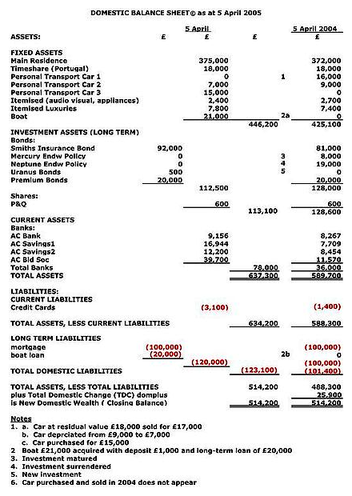{kind=link}
Sample Domestic Balance Sheet (DBS) to be referenced by Domestic Well-Being Accounting (DWBA)
Current Assets
A current asset on the balance sheet is an asset which can either be converted to cash or used to pay current liabilities within 12 months. Typical current assets include cash and cash equivalents, short-term investments, accounts receivable, inventories and the portion of prepaid liabilities which will be paid within a year.
Cash and cash equivalents are the most liquid assets found within the asset portion of a company's balance sheet. Cash equivalents are assets that are readily convertible into cash, such as money market holdings, short-term government bonds or treasury bills, marketable securities and commercial papers. Cash equivalents are distinguished from other investments through their short-term existence; they mature within 3 months whereas short-term investments are 12 months or less, and long-term investments are any investments that mature in excess of 12 months.
Accounts receivable represents money owed by entities to the firm on the sale of products or services on credit. In most business entities, accounts receivable is typically executed by generating an invoice and either mailing or electronically delivering it to the customer, who, in turn, must pay it within an established timeframe, called credit terms or payment terms.
Most manufacturing organizations usually divide their inventory into:
- raw materials - materials and components scheduled for use in making a product,
- work in process (WIP) - materials and components that have began their transformation to finished goods,
- finished goods - goods ready for sale to customers, and
- goods for resale - returned goods that are salable.
A deferred expense or prepayment, prepaid expense (plural often prepaids), is an asset representing cash paid out to a counterpart for goods or services to be received in a later accounting period. For example, if a service contract is paid quarterly in advance, at the end of the first month of the period two months remain as a deferred expense. In the deferred expense, the early payment is accompanied by a related, recognized expense in the subsequent accounting period, and the same amount is deducted from the prepayment.
Non-current Assets
A non-current asset is a term used in accounting for assets and property which cannot easily be converted into cash. This can be compared with current assets such as cash or bank accounts, which are described as liquid assets. Non-current assets include property, plant and equipment (PPE), investment property (such as real estate held for investment purposes), intangible assets, long-term financial assets, investments accounted for by using the equity method, and biological assets, which are living plants or animals.
Property, plant, and equipment normally include items such as land and buildings, motor vehicles, furniture, office equipment, computers, fixtures and fittings, and plant and machinery. These often receive favorable tax treatment (depreciation allowance) over short-term assets.
Intangible assets are defined as identifiable, non-monetary assets that cannot be seen, touched or physically measured. They are created through time and effort, and are identifiable as a separate asset. There are two primary forms of intangibles - legal intangibles (such as trade secrets (e. g., customer lists), copyrights, patents, and trademarks) and competitive intangibles (such as knowledge activities (know-how, knowledge), collaboration activities, leverage activities, and structural activities). The intangible asset "goodwill" reflects the difference between the firm's net assets and its market value; the amount is first recorded at time of acquisition. The additional value of the firm in excess of its net assets usually reflects the company's reputation, talent pool, and other attributes that separate it from the competition. Goodwill must be tested for impairment on an annual basis and adjusted if the firm's market value has changed.
Investments accounted for by using the equity method are 20-50% stake investments in other companies. The investor keeps such equities as an asset on the balance sheet. The investor's proportional share of the associate company's net income increases the investment (and a net loss decreases the investment), and proportional payment of dividends decreases it. In the investor's income statement, the proportional share of the investee's net income or net loss is reported as a single-line item.
2.3.2. Liabilities and Equity
The balance sheet contains details on company liabilities and owner's equity.
Learning Objective
Apply the accounting equation to create a balance sheet
Key Points
- In financial accounting, a liability is defined as an obligation of an entity arising from past transactions or events, the settlement of which may result in the transfer or use of assets, provision of services or other yielding of economic benefits in the future.
- Equity is the residual claim or interest of the most junior class of investors in assets, after all liabilities are paid.
- The types of accounts and their description that comprise the owner's equity depend on the nature of the entity and may include: Common stock, preferred stock, capital surplus, retained earnings, treasury stock, stock options and reserve.
Key Term
- Preferred Stock
- Stock with a dividend, usually fixed, that is paid out of profits before any dividend can be paid on common stock. It also has priority to common stock in liquidation.
In financial accounting, a liability is defined as an obligation of an entity arising from past transactions or events, the settlement of which may result in the transfer or use of assets, provision of services or other yielding of economic benefits in the future. A liability is defined by the following characteristics:
- Any type of borrowing from persons or banks for improving a business or personal income that is payable during short or long time;
- A duty or responsibility to others that entails settlement by future transfer or use of assets, provision of services, or other transaction yielding an economic benefit, at a specified or determinable date, on occurrence of a specified event, or on demand;
- A duty or responsibility that obligates the entity to another, leaving it little or no discretion to avoid settlement; and,
- A transaction or event obligating the entity that has already occurred.
The accounting equation relates assets, liabilities, and owner's equity: "" The accounting equation is the mathematical structure of the balance sheet.
Assets = Liabilities + Owner's Equity
In accounting and finance, equity is the residual claim or interest of the most junior class of investors in assets, after all liabilities are paid. If liability exceeds assets, negative equity exists. In an accounting context, shareholders' equity (or stockholders' equity, shareholders' funds, shareholders' capital, or similar terms) represents the remaining interest in assets of a company, spread among individual shareholders of common or preferred stock.
At the start of a business, owners put some funding into the business to finance operations. This creates a liability on the business in the shape of capital, as the business is a separate entity from its owners. Businesses can be considered, for accounting purposes, sums of liabilities and assets: this is the accounting equation. After liabilities have been accounted for, the positive remainder is deemed the owner's interest in the business.
In financial accounting, owner's equity consists of the net assets of an entity. Net assets is the difference between the total assets of the entity and all its liabilities. Equity appears on the balance sheet, one of the four primary financial statements.
The assets of an entity includes both tangible and intangible items, such as brand names and reputation or goodwill. The types of accounts and their description that comprise the owner's equity depend on the nature of the entity and may include: Common stock, preferred stock, capital surplus, retained earnings, treasury stock, stock options and reserve.
The total changes to equity is calculated as follows:
Equity (end of year balance) = Equity (beginning of year balance) +/- changes to common or preferred stock and capital surplus +/- net income/loss (net profit/loss earned during the period) − dividends. Dividends are typically cash distributions of earnings to stockholders on hand and they are recorded as a reduction to the retained earnings account reported in the equity section.
2.3.3. Working Capital
Working capital is a financial metric which represents operating liquidity available to a business, organization and other entity.
Learning Objective
Discuss why working capital is an important metric for businesses.
Key Points
- Net working capital is calculated as current assets minus current liabilities.
- Current assets and current liabilities include three accounts which are of special importance: accounts receivable, accounts payable and inventories.
- The goal of working capital management is to ensure that the firm is able to continue its operations and that it has sufficient cash flow. The management of working capital involves managing inventories, accounts receivable and payable, and cash.
Key Terms
- deficit
- the amount by which spending exceeds revenue
- operating liquidity
- The ability of a company or individual to quickly convert assets to cash for the purpose of paying operating expenses.
Working capital (abbreviated WC) is a financial metric which represents operating liquidity available to a business, organization or other entity, including a governmental entity. Along with fixed assets, such as plant and equipment, working capital is considered a part of operating capital.
Net working capital is calculated as current assets minus current liabilities. It is a derivation of working capital, that is commonly used in valuation techniques such as discounted cash flows (DCFs). If current assets are less than current liabilities, an entity has a working capital deficiency, also called a working capital deficit. An increase in working capital indicates that the business has either increased current assets (that it has increased its receivables, or other current assets) or has decreased current liabilities - for example has paid off some short-term creditors.
Current assets and current liabilities include three accounts which are of special importance. These accounts represent the areas of the business where managers have the most direct impact: accounts receivable (current asset), inventories (current assets), and accounts payable (current liability). The current portion of debt (payable within 12 months) is critical, because it represents a short-term claim to current assets and is often secured by long-term assets. Common types of short-term debt are bank loans and lines of credit.
A company can be endowed with assets and profitability but short of liquidity if its assets cannot readily be converted into cash. Decisions relating to working capital and short-term financing are referred to as working capital management. These involve managing the relationship between a firm's short-term assets and its short-term liabilities. The goal of working capital management is to ensure that the firm is able to continue its operations and that it has sufficient cash flow to satisfy both maturing short-term debt and upcoming operational expenses. The management of working capital involves managing inventories, accounts receivable and payable, and cash.
Inventory management is to identify the level of inventory which allows for uninterrupted production but reduces the investment in raw materials - and minimizes reordering costs - and hence, increases cash flow.
Debtors' management involves identifying the appropriate credit policies, i.e. credit terms which will attract customers, such that any impact on cash flows and the cash conversion cycle will be offset by increased revenue and hence, return on capital.
Short-term financing requires identifying the appropriate source of financing, given the cash conversion cycle: the inventory is ideally financed by credit granted by the supplier; however, it may be necessary to utilize a bank loan (or overdraft).
Cash management involves identifying the cash balance which allows for the business to meet day-to-day expenses, but reduces cash holding costs.
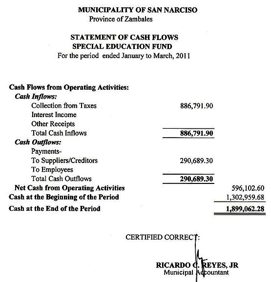{kind=link}
The management of working capital involves managing inventories, accounts receivable and payable, and cash.
2.3.4. Liquidity
Liquidity, a business's ability to pay obligations, can be assessed using various ratios: current ratio, quick ratio, etc.
Learning Objective
Calculate a company's liquidity using a variety of methods.
Key Points
- Liquidity refers to a business's ability to meet its payment obligations, in terms of possessing sufficient liquid assets, and to such assets themselves. For assets, liquidity is an asset's ability to be sold without causing a significant movement in the price and with minimum loss of value.
- A standard company balance sheet has three parts: assets, liabilities and ownership equity. The main categories of assets are usually listed first, typically in order of liquidity.
- For a corporation with a published balance sheet there are various ratios used to calculate a measure of liquidity, namely the current ratio, the quick ratio, the operating cash flow ratio, and the liquidity ratio (acid test).
Key Terms
- liquidity ratio
- measurement of the availability of cash to pay debt
- cash equivalents
- A deferred expense or prepayment, prepaid expense, plural often prepaids, is an asset representing cash paid out to a counterpart for goods or services to be received in a later accounting period.
In accounting, liquidity (or accounting liquidity) is a measure of the ability of a debtor to pay his debts when they fall due. A standard company balance sheet has three parts: assets, liabilities and ownership equity. The main categories of assets are usually listed first, and typically in order of liquidity. Money, or cash, is the most liquid asset, and can be used immediately to perform economic actions like buying, selling, or paying debt, meeting immediate wants and needs. Next are cash equivalents, short-term investments, inventories, and prepaid expenses.
Liquidity also refers both to a business's ability to meet its payment obligations, in terms of possessing sufficient liquid assets, and to such assets themselves. For assets themselves, liquidity is an asset's ability to be sold without causing a significant movement in the price and with minimum loss of value.
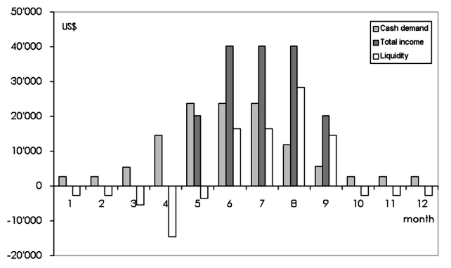{kind=link}
Monthly liquidity of an organic vegetable business
For a corporation with a published balance sheet, there are various ratios used to calculate a measure of liquidity. These include the following:
- The current ratio, which is the simplest measure and is calculated by dividing the total current assets by the total current liabilities. A value of over 100% is normal in a non-banking corporation. However, some current assets are more difficult to sell at full value in a hurry.
- The quick ratio, which is calculated by deducting inventories and prepayments from current assets and then dividing by current liabilities--this gives a measure of the ability to meet current liabilities from assets that can be readily sold.
- The operating cash flow ratio can be calculated by dividing the operating cash flow by current liabilities. This indicates the ability to service current debt from current income, rather than through asset sales.
- The liquidity ratio (acid test) is a ratio used to determine the liquidity of a business entity. Liquidity ratio expresses a company's ability to repay short-term creditors out of its total cash. The liquidity ratio is the result of dividing the total cash by short-term borrowings. It shows the number of times short-term liabilities are covered by cash. If the value is greater than 1.00, it means fully covered. The formula is the following: LR = liquid assets / short-term liabilities.
2.3.5. Debt to Equity
The debt-to-equity ratio (D/E) indicates the relative proportion of shareholder's equity and debt used to finance a company's assets.
Learning Objective
Identify the different methods of calculating the debt to equity ratio.
Key Points
- The debt-to-equity ratio (D/E) is a financial ratio indicating the relative proportion of shareholders' equity and debt used to finance a company's assets. Closely related to leveraging, the ratio is also known as risk, gearing or leverage.
- Preferred stocks can be considered part of debt or equity. Attributing preferred shares to one or the other is partially a subjective decision.
- The formula of debt/ equity ratio: D/E = Debt (liabilities) / equity = Debt / (Assets – Debt) = (Assets – Equity) / Equity.
Key Term
- leverage
- The use of borrowed funds with a contractually determined return to increase the ability of a business to invest and earn an expected higher return (usually at high risk).
Debt to Equity
The debt-to-equity ratio (D/E) is a financial ratio indicating the relative proportion of shareholders' equity and debt used to finance a company's assets. Closely related to leveraging, the ratio is also known as risk, gearing or leverage. The two components are often taken from the firm's balance sheet or statement of financial position. However, the ratio may also be calculated using market values for both if the company's debt and equity are publicly traded, or using a combination of book value for debt and market value for equity financially. ""
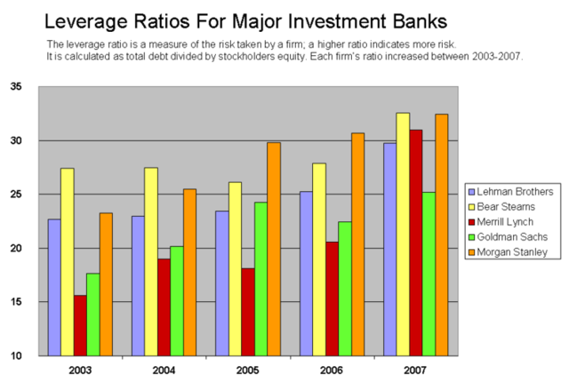{kind=link}
Each of the five largest investment banks took on greater risk leading up to the subprime crisis. This is summarized by their leverage ratio, which is the ratio of total debt to total equity. A higher ratio indicates more risk.
Preferred stocks can be considered part of debt or equity. Attributing preferred shares to one or the other is partially a subjective decision, but will also take into account the specific features of the preferred shares. When used to calculate a company's financial leverage, the debt usually includes only the long term debt (LTD). Quoted ratios can even exclude the current portion of the LTD.
Financial analysts and stock market quotes will generally not include other types of liabilities, such as accounts payable, although some will make adjustments to include or exclude certain items from the formal financial statements. Adjustments are sometimes also made, for example, to exclude intangible assets, and this will affect the formal equity; debt to equity (dequity) will therefore also be affected.
The formula of debt/equity ratio: D/E = Debt (liabilities) / equity. Sometimes only interest-bearing long-term debt is used instead of total liabilities in the calculation.
A similar ratio is the ratio of debt-to-capital (D/C), where capital is the sum of debt and equity:D/C = total liabilities / total capital = debt / (debt + equity)
The relationship between D/E and D/C is: D/C = D/(D+E) = D/E / (1 + D/E)
The debt-to-total assets (D/A) is defined asD/A = total liabilities / total assets = debt / (debt + equity + non-financial liabilities)
On a balance sheet, the formal definition is that debt (liabilities) plus equity equals assets, or any equivalent reformulation. Both the formulas below are therefore identical: A = D + EE = A – D or D = A – E
Debt to equity can also be reformulated in terms of assets or debt: D/E = D /(A – D) = (A – E) / E
2.3.6. Market Value vs. Book Value
Book value is the price paid for a particular asset, while market value is the price at which you could presently sell the same asset.
Learning Objective
Distinguish between market value and book value.
Key Points
- Market value is the price at which an asset would trade in a competitive auction setting.
- Book value or carrying value is the value of an asset according to its balance sheet account balance. For assets, the value is based on the original cost of the asset less any depreciation, amortization or impairment costs made against the asset.
- In many cases, the carrying value of an asset and its market value will differ greatly. However, they are interrelated.
Key Term
- amortization
- The distribution of the cost of an intangible asset, such as an intellectual property right, over the projected useful life of the asset.
Market value is the price at which an asset would trade in a competitive auction setting. Market value is often used interchangeably with open market value, fair value, or fair market value. International Valuation Standards defines market value as "the estimated amount for which a property should exchange on the date of valuation between a willing buyer and a willing seller in an arm's-length transaction after proper marketing wherein the parties had each acted knowledgeably, prudently, and without compulsion. "
In accounting, book value or carrying value is the value of an asset according to its balance sheet account balance. For assets, the value is based on the original cost of the asset less any depreciation, amortization, or impairment costs made against the asset. An asset's initial book value is its its acquisition cost or the sum of allowable costs expended to put it into use. Assets such as buildings, land, and equipment are valued based on their acquisition cost, which includes the actual cash price of the asset plus certain costs tied to the purchase of the asset, such as broker fees. The book value is different from market value, as it can be higher or lower depending on the asset in question and the accounting practices that affect book value, such as depreciation, amortization and impairment. In many cases, the carrying value of an asset and its market value will differ greatly. If the asset is valued on the balance at market value, then its book value is equal to the market value.
{kind=link}
4 Depreciation methods (1. Straight-Line method, (2. Double-Declining Balance method, (3. Sum-of-the-Years' Digits method, (4.Productive output method)
Ways of measuring the value of assets on the balance sheet include: historical cost, market value or lower of cost or market. Historical cost is typically the purchase price of the asset or the sum of certain costs expended to put the asset into use. Market value is the asset's worth if it were to be exchanged in the open market in an arm's length transaction; it can also be derived based on the asset's present value of the expected cash flows it will generate. Certain assets are disclosed at lower of cost or market in order to conform to accounting's conservatism principle, which stresses that assets should never be overstated.
2.3.7. Limitations of the Balance Sheet
The three limitations to balance sheets are assets being recorded at historical cost, use of estimates, and the omission of valuable non-monetary assets.
Learning Objective
Critique the balance sheet
Key Points
- Balance sheets do not show true value of assets. Historical cost is criticized for its inaccuracy since it may not reflect current market valuation.
- Some of the current assets are valued on an estimated basis, so the balance sheet is not in a position to reflect the true financial position of the business.
- The balance sheet can not reflect those assets which cannot be expressed in monetary terms, such as skill, intelligence, honesty, and loyalty of workers.
Key Terms
- carrying value
- In accounting, book value or carrying value is the value of an asset according to its balance sheet account balance. For assets, the value is based on the original cost of the asset less any depreciation, amortization or Impairment costs made against the asset.
- Fixed assets
- Fixed assets, also known as non-current assets or property, plant, and equipment (PP&E), is a term used in accounting for assets and property that cannot easily be converted into cash. This can be compared with current assets, such as cash or bank accounts, which are described as liquid assets. In most cases, only tangible assets are referred to as fixed.
Limitations of the Balance Sheet
In financial accounting, a balance sheet or statement of financial position is a summary of the financial balances of a sole proprietorship, business partnership, corporation, or other business organization, such as an LLC or an LLP. Assets, liabilities and ownership equity are listed as of a specific date, such as the end of its financial year. A balance sheet is often described as a "snapshot of a company's financial condition. " Of the four basic financial statements, the balance sheet is the only statement which applies to a single point in time of a business' calendar year. There are three primary limitations to balance sheets, including the fact that they are recorded at historical cost, the use of estimates, and the omission of valuable things, such as intelligence.
Fixed assets are shown in the balance sheet at historical cost less depreciation up to date. Depreciation affects the carrying value of an asset on the balance sheet. The historical cost will equal the carrying value only if there has been no change recorded in the value of the asset since acquisition. Therefore, the balance sheet does not show true value of assets. Historical cost is criticized for its inaccuracy since it may not reflect current market valuation.
{kind=link}
Different methods of depreciation affect the carrying value of an asset on balance sheets.
Some of the current assets are valued on estimated basis, so the balance sheet is not in a position to reflect the true financial position of the business. Intangible assets like goodwill are shown in the balance sheet at imaginary figures, which may bear no relationship to the market value. The International Accounting Standards Board (IASB) offers some guidance (IAS 38) as to how intangible assets should be accounted for in financial statements. In general, legal intangibles that are developed internally are not recognized, and legal intangibles that are purchased from third parties are recognized. Therefore, there is a disconnect–goodwill from acquisitions can be booked, since it is derived from a market or purchase valuation. However, similar internal spending cannot be booked, although it will be recognized by investors who compare a company's market value with its book value.
Finally, the balance sheet can not reflect those assets which cannot be expressed in monetary terms, such as skill, intelligence, honesty, and loyalty of workers.
2.4. Tax Considerations
2.4.1. Corporate Taxes
Corporate taxes are levied on the income of various entities, stemming from their business operations.
Learning Objective
Identify how each type of business association is taxed.
Key Points
- Legal forms of corporations include sole proprietorships, partnerships, C corporations, S corporations, and LLCs.
- The type of corporation chosen will determine such factors as liability and taxation on the entity.
- Taxable income for a corporation is defined as all gross income (sales plus other income minus cost of goods sold and tax exempt income) less allowable tax deductions and tax credits.
Key Term
- jurisdiction
- the limits or territory within which authority may be exercised
Corporate Taxes
Income taxes in the United States are an enormous and complex issue. Corporate taxes are especially complicated because of the inherent complexities of corporations themselves. Corporations may be taxed on their incomes, property, or their very existence. The types and rates of taxes vary depending on the jurisdiction in which the corporation is organized or acts. Maryland, for example, imposes a tax on corporations organized within its borders based on the number of shares of capital stock they issue.
Legal Forms of Corporations
Corporate taxation differs depending upon the legal form of the corporation. Which legal form to take is driven by the objectives of the company, but taxation also plays a vital role. Tax law contains built-in trade-offs for each corporate form, and companies often must give up some liability protection or flexibility.
Sole Proprietorship
A sole proprietorship is a business entity that is owned and run by a single individual. There is no legal distinction between the owner and the business. They are one in the same for tax purposes. The individual reports all income and expenses for the business on his or her personal income tax statement. In other words, the business is not taxed as a separate entity.
There is no method for sheltering tax in a sole proprietorship. Earnings are taxed regardless if they are actually distributed. In addition, the individual is held liable for the actions of the business, meaning claimants can pursue the personal property of the individual should solvency issues arise.
Partnership
A partnership is a business entity with two or more owners. For tax purposes, partnerships are treated similarly to a sole proprietorship - the owners pay tax on their "distributive share" of the business's taxable income. The partners must agree on how the income of the business will be allocated. Partners are jointly liable for the operations of the business. Thus, one partner may pursue one or any number of other partners in the case of personal damages or losses.
C Corporation
A C corporation refers to any corporation that is taxed separately from its owners. Although vastly outnumbered by sole proprietorships and partnerships, most of the largest companies in the U.S. are C corporations. Owners of C corporations are personally protected from any liability of the company - an idea known as the corporate veil. In return, the earnings of a C corporation are taxed both on the entity level and the individual level.
S Corporation
The S corporation is a hybrid entity wherein the income, deductions and tax credits of the business are taxed at the shareholder level as opposed to the entity level. However, owners enjoy the same limited liability awarded to C corporations. In exchange for this luxury, rules are placed on the types of corporations that can elect S status:
- The corporation must have only one class of stock.
- It must be a domestic corporation (owned by U.S. citizens).
- It must not have more than 100 shareholders (spouses are considered to be one shareholder).
- Shareholders generally cannot include corporations or partnerships (certain trusts, estates and tax-exempt corporations are permitted).
- Profits and losses must be allocated to shareholders proportionately to each one's interest in the business.
Limited Liability Company (LLC)
An LLC, like an S corporation, is a hybrid entity having certain characteristics of both a corporation and a partnership or sole proprietorship. The primary characteristic an LLC shares with a corporation is limited liability, and the primary characteristic it shares with a partnership is taxation on the ownership level. It differs from an S corporation in that there are no restrictions on the number or types of shareholders. It is actually a type of unincorporated association rather than a corporation.
Taxable Income
In the United States, taxable income for a corporation is defined as all gross income (sales plus other income minus cost of goods sold and tax exempt income) less allowable tax deductions and tax credits. This income is taxed at a specified corporate tax rate. This rate varies by jurisdiction and is generally the same for different types of income. Some systems have graduated tax rates - corporations with lower levels of income pay a lower rate of tax - or impose tax at different rates for different types of corporations.
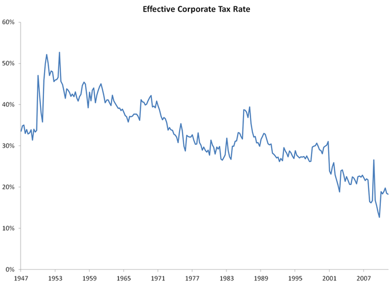{kind=link}
This graph shows the effect of corporate tax rates in the U.S. from 1947 through 2012.
In the US, federal rates range from 15% to 35%. States charge rates ranging from 0% to 10%, deductible in computing federal taxable income. Some cities charge rates up to 9%, also deductible in computing Federal taxable income. Corporations are also subject to property tax, payroll tax, withholding tax, excise tax, customs duties and value added tax. However, these are rarely referred to as "corporate tax."
2.4.2. Tax Deductions
A tax deduction is a reduction of the amount of income subject to tax.
Learning Objective
Identify deductions associated with carrying on a trade or business
Key Points
- Business expenses are those that are incurred in order to generate profit for a company, such as cost of goods sold.
- Ordinary expenses, such as interest paid on debt, are typically deductible as long as they are appropriate to the nature of the business, the sort expected to help produce income, and are not lavish and extravagant.
- In a progressive tax system, the marginal tax rate must be used in order to calculate the after-tax cost of a deductible expense.
- While a deduction is a reduction of the level of taxable income, a tax credit is a sum deducted from the total amount of tax owed.
Key Term
- capital gains
- Profit that results from a disposition of a capital asset, such as stock, bond, or real estate due to arbitrage.
Example
- A company's marginal tax rate is 35%. What is the after-tax cost of a \$1,000 of deductible expense? After-tax cost = 1,000 x (1-0.35), so after-tax cost = 650
Tax Deductions
A tax deduction is a sum that can be removed from tax calculations. Specifically, it is a reduction of the income subject to tax. Often these deductions are subject to limitations or conditions. Nearly all jurisdictions that tax business income allow tax deductions for expenses incurred in trading or carrying on the trade or business. However, to be deducted, the expenses must be incurred in furthering the business, such as it must contribute to profit.
Deduction of Expenses
Expenses incurred in order to generate profit for a company are referred to as business expenses. These can be categorized into cost of goods sold and ordinary expenses--also knowns as trading or necessary expenses.
Cost of Goods Sold
Nearly all income tax systems allow a deduction for cost of goods sold. This can be considered an expense or simply a reduction in gross income, which is the starting point for determining Federal and state income tax. Several complexities must be factored in when determining cost of goods sold, including:
- assigning costs to particular goods when specific identification is not feasible;
- attributing common costs, such as factory burden, to particular goods;
- determining when costs are recognized;
- recognizing costs of goods that will not be sold or have declined in value.
Ordinary Expenses
According to tax law, the United States allows as a deduction "all the ordinary and necessary expenses paid or incurred during the taxable year in carrying on any trade or business..." Generally, this business must be regular, continuous, substantial, and entered into with an expectation of profit. Ordinary and necessary expenses tend to be those that are appropriate to the nature of the business, the sort expected to help produce income and promote the business, and those that are not lavish and extravagant.
An example of an ordinary expense is interest paid on debt, or interest expense incurred by a corporation in carrying out its trading activities. Such an expense comes with limitations, though, such as limiting the amount of deductible intrest that can be paid to related parties.
Non-Business Expenses
Expenses incurred from holding assets expected to produce income may also be deductible. For example, a deduction may be allowed for loss on sale, exchange, or abandonment of both business and non-business income producing assets. In the United States, a loss on non-business assets is considered a capital loss and deduction of the loss is limited to capital gains.
Marginal Tax Rate
Corporate taxes in the United States are considered to be progressive. That is to say, taxes are charged at a higher rate as income grows. To fully understand the effect of tax deductions, we must consider the marginal tax rate, which is the rate of tax paid on the next or last unit of currency of taxable income. The marginal tax rate is dependent upon a jurisdiction's tax structure, usually referred to as tax brackets. To determine the after-tax cost of a deductible expense, we simply multiply the cost by one minus the appropriate marginal tax rate .
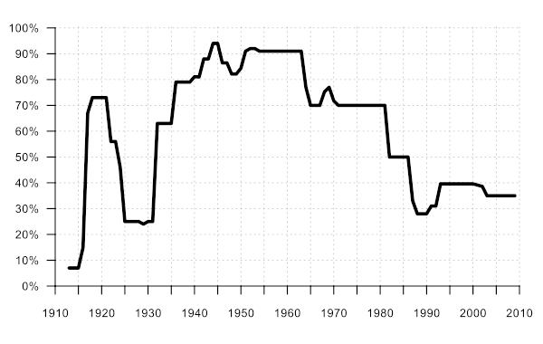{kind=link}
This graph plots the marginal income tax rates for the top tax bracket in the US from 1913 to 2009.
Deductions Versus Credits
Tax deductions and tax credits are often incorrectly equated. While a deduction is a reduction of the level of taxable income, a tax credit is a sum deducted from the total amount of tax owed. It is a dollar-for-dollar tax saving. For example, a tax credit of \$1,000 reduced taxes owed by \$1,000, regardless of the marginal tax rate. A tax credit may be granted in recognition of taxes already paid, as a subsidy, or to encourage investment or other behaviors.
2.4.3. Depreciation
Depreciation is the allocation of expenses associated with assets that contribute to operations over several periods.
Learning Objective
Describe the effect depreciation has on calculating a company's tax burden
Key Points
- To determine depreciation expense, the useful life of an asset under depreciation is estimated in time-units. Then the corresponding depreciation rate is calculated that will extinguish the value of the asset from the books when the estimated useful life ends.
- The straight-line method of depreciation reduces the book value of an asset by the same amount each period.
- The declining balance method of depreciation provides for a higher depreciation expense in the first year of an asset's life and gradually decreases expenses in subsequent years.
- Activity depreciation methods are not based on time but on a level of activity, such as miles driven or cycle counts.
- Depreciation allows a company to properly identify the amount of income it generates in a given period.
Key Terms
- amortize
- To wipe out (a debt, liability etc. ) gradually or in installments.
- salvage value
- The estimated value of an asset at the end of its useful life.
Example
- The overall cost for a company's new piece of machinery is 100,000. The equipment is assumed to have a salvage value at the end of it's life of 10,000. The useful life of the equipment is expected to be 10 years. If straight-line depreciation is used, what will be the annual depreciation expense? Depreciation = (100,000-10,000) / 10 Depreciation = \$9,000
Depreciation
Many tax systems require that the cost of items likely to produce future benefits be capitalized. Such assets include property and capital equipment that represent a commitment of resources over several periods. In accounting, the profits (net income) from an activity must be reduced by the costs associated with that activity. When an asset will be used in operations for several periods, tax systems often allow the allocation of the costs to periods in which the assets are used. In the U.S., this allocation is known as depreciation expense. It is important to reasonably estimate the useful life of the asset under depreciation in time-units. Then it is important to calculate the corresponding depreciation rate that will result in extinguishing the value of the asset from the books when the estimated useful life ends. There are several methods for achieving this goal.
Straight-Line Method
The straight-line method of depreciation reduces the book value of an asset by the same amount each period. This amount is determined by dividing the total value of the asset, less its salvage value, by the number of periods in its useful life. This amount is then deducted from income in each applicable period. Straight-line depreciation is the simplest and most-often-used technique .
Annual depreciation expense is equal to the original cost of the asset minus its salvage value, divided by the useful life of the asset.
The economic reasoning behind the straight-line method involves the acceptance that depreciation is an approximation of the rate at which an asset transfers value to the operations of a business. As a result, we should use the most economical, or simplest, method to calculate and incorporate its costs.
Declining Balance Method
The declining balance method of depreciation provides for a higher depreciation expense in the first year of an asset's life and gradually decreases expenses in subsequent years. This may be a more realistic reflection of the actual expected benefit from the use of the asset because many assets are most useful when they are new. Under this method, the annual depreciation expense is found by multiplying book value of the asset each year by a fixed rate. Since this book value will differ from year to year, the annual depreciation expense will subsequently differ. The most commonly used rate is double the straight-line rate. Since the declining balance method will never fully amortize the original cost of the asset, the salvage value is not considered in determining the annual depreciation.
Activity Depreciation Methods
Activity depreciation methods are not based on time, but on a level of activity. When the asset is acquired, its life is estimated in terms of this level of activity. This could be miles driven for a vehicle or a cycle count for a machine. Each year, the depreciation expense is calculated by multiplying the rate by the actual activity level.
Effect of Depreciation on Taxes
Depreciation expense affects net income in each period of an asset's useful life. Therefore, it can be deducted from taxes owed in each of these periods. In other words, depreciation allows a company to properly identify the amount of income it generates in a given period. As with all expenses, a dollar of taxes that a company can defer until later is a dollar that can be used in profit generating operations today.
2.4.4. Individual Taxes
The U.S. federal, state and local governments levy taxes on individuals based on income, property, estate transfers, and/or sales transactions.
Learning Objective
Describe each type of tax that can be imposed on an individual
Key Points
- A direct tax is one imposed upon an individual person or on property, as opposed to an indirect tax that is imposed upon a transaction.
- Income tax is levied on the total income of the individual, less deductions and credits.
- Sales tax is levied on the state level on retail sale, lease, and rental of many goods, as well as some services.
- Property tax is levied on interests in real property (land, buildings, and permanent improvements).
- Estate tax is an excise tax levied on the right to pass property at death.
Key Term
- filing status
- A status defining the type of tax return form an individual will use, which is based on marital status and family situation.
Individual Taxes
In the United States, there are an assortment of federal, state, local, and special purpose taxes that are imposed by such jurisdictions on individuals in order to finance government operations. These taxes may be imposed on the same income, property, or activity, often without offset of one tax against another. Taxes may be based on property, income, transactions, importation of goods, business activity, or a variety of factors, and are generally imposed on the type of taxpayer for whom such tax base is relevant.
Direct Versus Indirect Taxes
Individual taxes can generally be defined as either direct or indirect. A direct tax is one imposed upon an individual person or on property, as opposed to a tax imposed upon a transaction. In U.S. constitutional law, direct taxes refer to poll taxes and property taxes, which are based on simple existence or ownership. Indirect taxes, such as sales or value-added tax, are imposed only when a taxable transaction occurs. People have the freedom to engage in or refrain from such transactions, whereas a direct tax is typically imposed upon an individual in an unconditional manner.
Individual Tax Categories
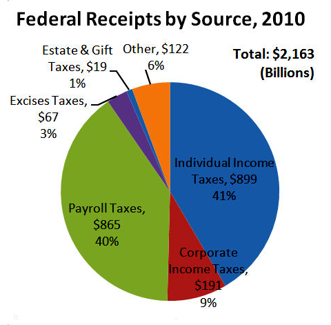{kind=link}
This chart depicts the level of tax received by the United States federal government from each source in 2010.
Income Tax
Personal income tax is generally the largest source of tax revenue in the United States. Taxes based on income are imposed at the federal, most state, and some local levels. Income tax is levied on the total income of the individual, less deductions, reducing an individual's taxable income, and credits, a dollar-for-dollar reduction of total tax liability. The tax system allows for personal exemptions, as well as certain "itemized deductions," including:
- Medical expenses (over 7.5% of adjusted gross income)
- State and local income and property taxes
- Interest expense on certain home loans
- Gifts of money or property to qualifying charitable organizations, subject to certain maximum limitations
- Losses on non-income-producing property due to casualty/theft
- Contribution to certain retirement or health savings plans
- Certain educational expenses
Income tax is often collected on a pay-as-you-earn basis (i.e., witholding taxes from wages). Small corrections are usually made after the end of the tax year. These corrections take one of two forms: payments to the government for taxpayers who have not paid enough during the tax year; and government tax refunds for those who have overpaid.
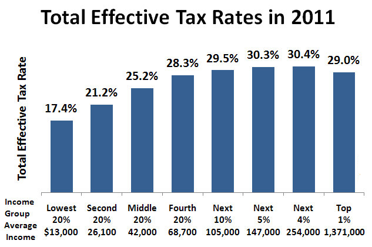{kind=link}
This graph shows the total effective tax rates for each earning class in 2011.
Federal and many state income tax rates are graduated or progressive–they are higher (graduated) at higher levels of income. The income level at which various tax rates apply for individuals varies by filing status. The income level at which each rate starts generally is higher, therefore, tax is lower for married couples filing a joint return or single individuals filing as head of household. Individuals are subject to federal graduated tax rates from 10% to 35%. State income tax rates vary from 1% to 16%, including local income tax where applicable.
Payroll Tax
Payroll taxes are imposed on employers and employees and on various compensation bases. These include income tax witholding, social security and medicare taxes, and unemployment taxes.
Sales Tax
Sales tax is an indirect tax levied on the state level, including taxes on retail sale, lease and rental of goods, as well as some services. Many cities, counties, transit authorities, and special purpose districts impose an additional local sales tax. Sales tax is calculated as the purchase price times the appropriate tax rate. Tax rates vary widely by jurisdiction from less than 1% to over 10%. Nearly all jurisdictions provide numerous categories of goods and services that are exempt from sales tax or taxed at a reduced rate.
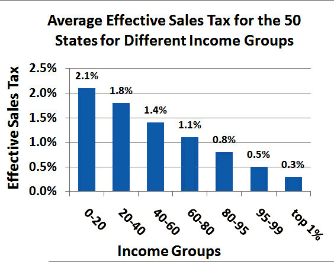{kind=link}
This graph shows the effective sales tax rates for the 50 states.
In addition to sales tax, excise taxes are imposed at the federal and state levels on a goods, including alcohol, tobacco, tires, gasoline, diesel fuel, coal, firearms, telephone service, air transportation, unregistered bonds, etc.
Property Tax
Most jurisdictions below the state level impose a tax on interests in real property (land, buildings, and permanent improvements). Property tax is based on fair market value the subject property. The amount of tax is determined annually based on the market value of each property on a particular date. The tax is computed as the determined market value times an assessment ratio times the tax rate.
Estate and Gift Tax
The estate tax is an excise tax levied on the right to pass property at death. It is imposed on the estate, not the beneficiary. Gift taxes are levied on the giver (donor) of property where the property is transferred for less than adequate consideration. The Federal gift tax is computed based on cumulative taxable gifts, and is reduced by prior gift taxes paid. The Federal estate tax is computed on the sum of taxable estate and taxable gifts, and is reduced by prior gift taxes paid. These taxes are computed as the taxable amount times a graduated tax rate (up to 35%). Taxable values of estates and gifts are the fair market value.
2.5. The Statement of Cash Flows
2.5.1. Cash Flow from Operations
The operating cash flows refers to all cash flows that have to do with the actual operations of the business, such as selling products.
Learning Objective
Distinguish events that would affect the operating section of the cash flow statement from all of the business's other transaction
Key Points
- Operating cash flows refers to the cash a company generates from the revenues it brings in, excluding costs associated with long-term investment on capital items or investment in securities (these are investing or financing activities).
- GAAP and IFRS vary in their categorization of many cash flows, such as paying dividends. Some activities that are operating cash flows under one system are financing or investing in another.
- Major operating activities such as manufacturing products or selling a product may appear on the income statement but not on the cash flow statement, because cash has not yet changed hands.
Key Terms
- GAAP
- Generally Accepted Accounting Principles refer to the standard framework of guidelines, conventions, and rules accountants are expected to follow in recording, summarizing, and preparing financial statements in any given jurisdiction.
- IFRS
- International Financial Reporting Standards. The major accounting standards system used outside of the United States.
The operating cash flows component of the cash flow statement refers to all cash flows that have to do with the actual operations of the business. It refers to the amount of cash a company generates from the revenues it brings in, excluding costs associated with long-term investment on capital items or investment in securities (these are investing or financing activities). Essentially, it is the difference between the cash generated from customers and the cash paid to suppliers.
Cash flows from operating activities can be calculated and disclosed on the cash flow statement using the direct or indirect method. The direct method shows the cash inflows and outflows affecting all current asset and liability accounts, which largely make up most of the current operations of the entity. Those preparers that use the direct method must also provide operating cash flows under the indirect method. The indirect method is a reconciliation of the period's net income to arrive at cash flows from operations; changes in current asset and liability accounts are added or subtracted from net income based on whether the change increased or decreased cash. The indirect method must be disclosed in the cash flow statement to comply with U.S. accounting standards, or GAAP.
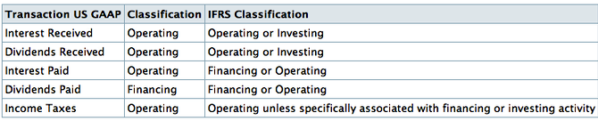{kind=link}
Some transactions may be classified as different types of cash flows under GAAP and IFRS accounting standards.
One major difference between GAAP and IFRS is how interest paid is categorized. Under GAAP, a loan payment would have to be broken down into two parts: the payment on principal (financing) and the payment of interest (operating). Under IFRS, it is possible to categorize both as financing cash flows.
All of the major operating cash flows, however, are classified the same way under GAAP and IFRS. The most noticeable cash inflow is cash paid by customers. Cash from customers is not necessarily the same as revenue, though. For example, if a company makes all of its sales by extending credit to customers, it will have generated revenues but not cash flows from customers. It is only when the company collects cash from customers that it has a cash flow.
Significant cash outflows are salaries paid to employees and purchases of supplies. Just as with sales, salaries, and the purchase of supplies may appear on the income statement before appearing on the cash flow statement. Operating cash flows, like financing and investing cash flows, are only accrued when cash actually changes hands, not when the deal is made.
2.5.2. Cash Flow from Investing
Cash flow from investing results from activities related to the purchase or sale of assets or investments made by the company.
Learning Objective
Distinguish investing activities that affect a company's cash flow statement from the business's other transactions
Key Points
- Assets included in investment activity include land, buildings, and equipment.
- Receiving dividends from another company's stock is an investing activity, although paying dividends on a company's own stock is not.
- An investing activity only appears on the cash flow statement if there is an immediate exchange of cash.
Key Terms
- investing activities
- actions where money is put into something with the expectation of gain, usually over a longer term
- purchase return
- merchandise given back to the seller from the buyer after the sale in return for a refund
- investing activity
- An activity that causes changes in non-current assets or involves a return on investment.
- merger
- The legal union of two or more corporations into a single entity, typically assets and liabilities being assumed by the buying party.
One of the components of the cash flow statement is the cash flow from investing . An investing activity is anything that has to do with changes in non-current assets -- including property and equipment, and investment of cash into shares of stock, foreign currency, or government bonds -- and return on investment -- including dividends from investment in other entities and gains from sale of non-current assets. These activities are represented in the investing income part of the income statement.
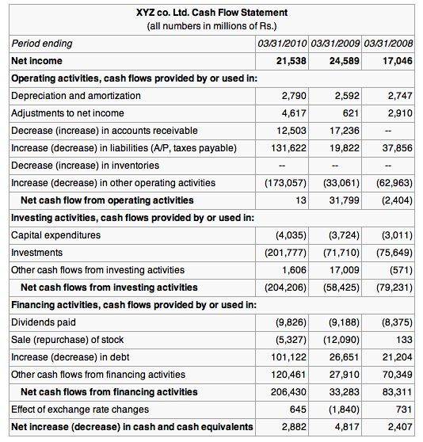{kind=link}
Example of cash flow statement (indirect method)
It is important to note that investing activity does not concern cash from outside investors, such as bondholders or shareholders. For example, a company may decide to pay out a dividend. A dividend is often thought of as a payment to those who invested in the company by buying its stock. However, this cash flow is not representative of an investing activity on the part of the company. The investing activity was undertaken by the shareholder. Therefore, paying out a dividend is a financing activity.
Some examples of investment activity from the company's perspective would include:
- Cash outflow from the purchase of an asset (land, building, equipment, etc.).
- Cash inflow from the sale of an asset.
- Cash outflow from the acquisition of another company.
- Cash inflow resulting from a merger.
- Cash inflow resulting dividends paid on stock owned in another company.
It is important to remember that, as with all cash flows, an investing activity only appears on the cash flow statement if there is an immediate exchange of cash. Therefore, extending credit to a customer (accounts receivable) is an investing activity, but it only appears on the cash flow statement when the customer pays off their debt.
2.5.3. Cash Flow from Financing
Cash flows from financing activities arise from the borrowing, repaying, or raising of money.
Learning Objective
Distinguish financing activities that affect a company's cash flow statement from all of the business's other transactions
Key Points
- Financing activities can be seen in changes in non-current liabilities and in changes in equity in the change-in-equity statement.
- A positive financing cash flow could be really great for a company (it just went issued stock at a great price) or could be due to the company having to take out loans to stay out of bankruptcy.
- Issuing credit is not a financing activity though taking on credit is. Like all cash flows, such activities only appear on the cash flow statement when the exchange of money actually takes place.
Key Terms
- financing activities
- actions where money is flowing between the company and investors in the company, such as banks and shareholders
- financing
- A transaction that provides funds for a business.
Financing Activities
One of the three main components of the cash flow statement is cash flow from financing. In this context, financing concerns the borrowing, repaying, or raising of money. This could be from the issuance of shares , buying back shares, paying dividends, or borrowing cash. Financing activities can be seen in changes in non-current liabilities and in changes in equity in the change-in-equity statement.
On the liability side, a company may take out a loan. Everything concerning the loan is a financing activity. Receiving the money is a positive cash flow because cash is flowing into the company, while each individual payment is a negative cash flow.
However, when a company makes a loan (by extending credit to a customer, for example), it is not partaking in a financing activity. Extending credit is an investing activity, so all cash flows related to that loan fall under cash flows from investing activities, not financing activities.
As is the case with operating and investing activities, not all financing activities impact the cash flow statement -- only those that involve the exchange of cash do. For example, a company may issue a discount which is a financing expense. However, because no cash changes hands, the discount does not appear on the cash flow statement.
Overall, positive cash flow could mean a company has just raised cash via a stock issuance or the company borrowed money to pay its obligations, therefore avoiding late payments or even bankruptcy. Regardless, the cash flow statement is an important part of analyzing a company's financial health, but is not the whole story.
2.5.4. Interpreting Overall Cash Flow
Having positive and large cash flow is a good sign for any business, though does not by itself mean the business will be successful.
Learning Objective
Explain the significance of each component of the Cash Flow Statement
Key Points
- The three types of cash flow are cash from from operations, investing, and financing.
- Having positive cash flows is important because it means that the company has at least some liquidity and may be solvent.
- A positive cash flow does not guarantee that the company can pay all of its bills, just as a negative cash flow does not mean that it will miss its payments.
- When preparing the statement of cash flows, analysts must focus on changes in account balances on the balance sheet.
- Cash flows from operating activities are essential to helping analysts assess the company's ability to meet ongoing funding requirements, contribute to long-term projects and pay a dividend.
- Analysis of cash flow from investing activities focuses on ratios when assessing a company's ability to meet future expansion requirements.
- The free cash flow is useful when analysts want to see how much cash can be extracted from a company without causing issues to its day to day operations.
Key Terms
- cash flow
- The sum of cash revenues and expenditures over a period of time.
- free cash flow
- net income plus depreciation and amortization, less changes in working capital, less capital expenditure
What is a Cash Flow Statement?
In financial accounting, a cash flow statement (also known as statement of cash flows or funds flow statement) is a financial statement that shows how changes in balance sheet accounts and income affect cash and cash equivalents. The cash flow statement, as the name suggests, provides a picture of how much cash is flowing in and out of the business during the fiscal year.
The cash flow is widely believed to be the most important of the three financial statements because it is useful in determining whether a company will be able to pay its bills and make the necessary investments. A company may look really great based on the balance sheet and income statement, but if it doesn't have enough cash to pay its suppliers, creditors, and employees, it will go out of business. A positive cash flow means that more cash is coming into the company than going out, and a negative cash flow means the opposite.
Relationship to Other Financial Statements
When preparing the cash flow statement, one must analyze the balance sheet and income statement for the coinciding period. If the accrual basis of accounting is being utilized, accounts must be examined for their cash components. Analysts must focus on changes in account balances on the balance sheet. General rules for this process are as follows.
- Transactions that result in an increase in assets will always result in a decrease in cash flow.
- Transactions that result in a decrease in assets will always result in an increase in cash flow.
- Transactions that result in an increase in liabilities will always result in an increase in cash flow.
- Transactions that result in a decrease in liabilities will always result in a decrease in cash flow
Interpretation
An analyst looking at the cash flow statement will first care about whether the company has a net positive cash flow. Having a positive cash flow is important because it means that the company has at least some liquidity and may be solvent.
Regardless of whether the net cash flow is positive or negative, an analyst will want to know where the cash is coming from or going to . The three types of cash flows (operating, investing, and financing) will all be broken down into their various components and then summed. The company may have a positive cash flow from operations, but a negative cash flow from investing and financing. This sheds important insight into how the company is making or losing money.
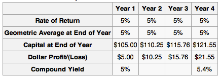{kind=link}
Company B has a higher yearly cash flow. However, Company A is actually earning more cash by its core activities and has already spent 45 million dollars in long-term investments, of which revenues will show up after three years.
The analyst will continue breaking down the cash flow statement in this manner, diving deeper and deeper into the specific factors that affect the cash flow. For example, cash flows from operating activities provide feedback on a company's ability to generate income from internal sources. Thus, these cash flows are essential to helping analysts assess the company's ability to meet ongoing funding requirements, contribute to long-term projects and pay a dividend.
Analysis of cash flow from investing activities focuses on ratios when assessing a company's ability to meet future expansion requirements. One such ratio is that for capital acquisitions:
Capital Acquisitions Ratio = cash flow from operating activities / cash paid for property, plant and equipment
This sphere of cash flows also can be used to assess how much cash is available after meeting direct shareholder obligations and capital expenditures necessary to maintain existing capacity.
Free Cash Flows
Free cash flow is a way of looking at a business's cash flow to see what is available for distribution among all the securities holders of a corporate entity. This may be useful when analysts want to see how much cash can be extracted from a company without causing issues to its day to day operations.
The free cash flow can be calculated in a number of different ways depending on audience and what accounting information is available. A common definition is to take the earnings before interest and taxes, add any depreciation and amortization, then subtract any changes in working capital and capital expenditure.
The free cash flow takes into account the consumption of capital goods and the increases required in working capital. For example in a growing company with a 30 day collection period for receivables, a 30 day payment period for purchases, and a weekly payroll, it will require more and more working capital to finance its operations because of the time lag for receivables even though the total profits has increased.
Free cash flow measures the ease with which businesses can grow and pay dividends to shareholders. Even profitable businesses may have negative cash flows. Their requirement for increased financing will result in increased financing cost reducing future income.
2.6. Other Statements
2.6.1. The Statement of Equity
The statement of equity explains the changes of the company's equity throughout the reporting period.
Learning Objective
Analyze a company's statement of equity and retained earnings
Key Points
- The statement breaks down changes in the owners' interest in the organization. Line items typically include profits or losses from operations, dividends paid, issue or redemption of stock, and any other items charged or credited to retained earnings.
- Owners' equity = assets − liabilities.
- The statement of equity uses information from the income statement and provides information to the balance sheet.
- Ending retained earnings = beginning retained earnings − dividends paid + net income.
Key Term
- retained earnings
- The portion of net income that is retained by the corporation rather than distributed to its owners as dividends.
The statement of equity (and similarly the equity statement, statement of owner's equity for a single proprietorship, statement of partner's equity for a partnership, and statement of retained earnings and stockholders' equity for a corporation) are basic financial statements.
These statements explain the changes of the company's equity throughout the reporting period. They break down changes in the owners' interest in the organization, and in the application of retained profit or surplus from one accounting period to the next. Line items typically include profits or losses from operations, dividends paid, issue or redemption of stock, and any other items charged or credited to retained earnings.
The statements are expected by generally accepted accounting principles (GAAP) and explain the owners' equity and retained earnings shown on the balance sheet, where: owners' equity = assets − liabilities.
A retained earnings statement is required by the U.S. GAAP whenever comparative balance sheets and income statements are presented . It may appear in the balance sheet, in a combined income statement and changes in retained earnings statement, or as a separate schedule. Therefore, the statement of retained earnings uses information from the income statement and provides information to the balance sheet.
The statement of retained earnings uses information from the income statement and provides information to the balance sheet.
Retained earnings are part of the balance sheet under "stockholders equity (shareholders' equity)" and is mostly affected by net income earned during a period of time by the company minus any dividends paid to the company's owners and stockholders. The retained earnings account on the balance sheet is said to represent an "accumulation of earnings" since net profits and losses are added / subtracted from the account from period to period.
Retained earnings are part of the statement of changes in equity. The general equation can be expressed as following: ending retained earnings = beginning retained earnings − dividends paid + net income
2.6.2. Depreciation
Depreciation refers to the allocation of the cost of assets to periods in which the assets are used.
Learning Objective
Calculate depreciation expense using different methods
Key Points
- Depreciation refers to the allocation of the cost of assets to periods in which the assets are used (depreciation with the matching principle).
- Generally this involves four criteria: cost of the asset, expected salvage value (residual value of the asset), estimated useful life of the asset, and a method of apportioning the cost over such life.
- There are several methods for calculating depreciation, generally based on either the passage of time or the level of activity of the asset: straight-line depreciation, accelerated depreciation methods, activity depreciation methods, sum-of-years' digits method, and units-of-production method.
Key Term
- salvage value
- The estimated value of an asset at the end of its useful life.
Depreciation
Depreciation refers to two very different but related concepts: the decrease in value of assets (fair value depreciation) and the allocation of the cost of assets to periods in which the assets are used (depreciation with the matching principle). The former affects values of businesses and entities. The latter affects net income.
Generally the cost is allocated, as a depreciation expense, among the periods in which the asset is expected to be used. Such expense is recognized by businesses for financial reporting and tax purposes. Methods of computing depreciation may vary by asset for the same business. Several standard methods of computing depreciation expense may be used, such as fixed percentage, straight line, and declining balance methods. Depreciation expense generally begins when the asset is placed in service. Depreciation is generally recognized under historical cost systems of accounting. Generally this involves four criteria: cost of the asset, expected salvage value (residual value of the asset), estimated useful life of the asset, and a method of apportioning the cost over such life.
Calculating Depreciation
There are several methods for calculating depreciation, generally based on either the passage of time or the level of activity or use of the asset.
1. Straight-line depreciation is the simplest and most often used technique, in which the company estimates the salvage value of the asset at the end of the period during which it will be used to generate revenue (useful life). The company will then expense a portion of original cost in equal increments over that period. The salvage value (residual value or scrap value) is an estimate of the value of the asset at the time it will be sold or disposed of.
This is the formula used to calculate straight-line depreciation.
2. Depreciation methods that provide for a higher depreciation charge in the first year of an asset's life and gradually decrease charges in subsequent years are called accelerated depreciation methods. This may be a more realistic reflection of an asset's actual expected benefit from the use of the asset: many assets are most useful when they are new. One popular accelerated method is the declining-balance method. Under this method the book value is multiplied by a fixed rate. The most common rate used is double the straight-line rate: Annual Depreciation = Depreciation Rate * Book Value at Beginning of Year.
3. Activity depreciation methods are not based on time, but on a level of activity. This could be miles driven for a vehicle, or a cycle count for a machine. When the asset is acquired, its life is estimated in terms of this level of activity. Each year, the depreciation expense is then calculated by multiplying the rate by the actual activity level.
4. Sum-of-years' digits is a depreciation method that results in a more accelerated write-off than straight line, but less than the declining-balance method. Under this method, annual depreciation is determined by multiplying the depreciable cost by a schedule of fractions.
- depreciable cost = original cost − salvage value
- book value = original cost − accumulated depreciation
5. Under the units-of-production method, the useful life of the asset is expressed in terms of the total number of units expected to be produced.
This is the units-of-production method for calculating depreciation.
2.6.3. Free Cash Flow
Free cash flow (FCF) is cash flow available for distribution among all the securities holders of an organization.
Learning Objective
Calculate free cash flow using all four methods.
Key Points
- There are four different methods for calculating free cash flows.
- Free cash flow measures the ease with which businesses can grow and pay dividends to shareholders.
- Net income and free cash flows are different. Some investors prefer using free cash flow instead of net income to measure a company's financial performance because free cash flow is more difficult to manipulate than net income.
Key Terms
- net working capital
- current assets minus current liabilities
- capital expenditure
- Funds spent by a company to acquire or upgrade a long-term asset.
- amortization
- The distribution of the cost of an intangible asset, such as an intellectual property right, over the projected useful life of the asset.
In corporate finance, free cash flow (FCF) is cash flow available for distribution among all the security holders of an organization. They include equity holders, debt holders, preferred stock holders, convertible security holders, and so on. There are four different methods for calculating free cash flows.
1. Free cash flows = EBIT x (1 - Tax rate) + Depreciation & Amortization - Changes in Working Capital - Capital Expenditure
2. Free cash flows = Net profit + Interest expense - Net Capital Expenditure (CAPEX) - Net change in Working Capital - Tax shield on Interest Expense
Where Net Capital Expenditure (CAPEX) = Capex - Depreciation & Amortization and Tax Shield = Net Interest Expense X Effective Tax Rate
3. When Profit after Tax and Debit/Equity ratio (d) is available,
Free cash flows = Profit after Tax - Changes in Capital Expenditure x (1-d) + Depreciation & Amortization x (1-d) - Changes in Working Capital x (1-d)
4. Cash flows from operations = Earnings before Interest and Tax x (1-Tax rate) + Depreciation & Amortization - Changes in Working Capital
Free cash flows = Cash flows from operations - Capital Expenditure ""
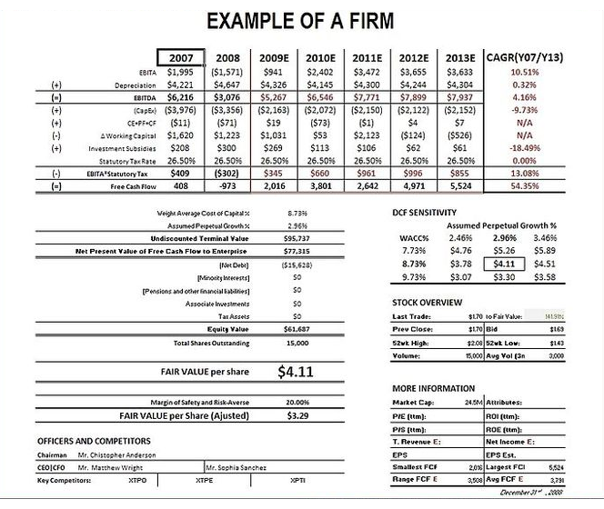{kind=link}
An example of calculating free cash flow.
Free cash flow measures the ease with which businesses can grow and pay dividends to shareholders. Even profitable businesses may have negative cash flows. Their requirement for increased financing will result in increased financing cost reducing future income.
There are two differences between net income and free cash flow. The first is the accounting for the consumption of capital goods. The net income measure uses depreciation, while the free cash flow measure uses last period's net capital purchases. The second difference is that the free cash flow measurement deducts increases in net working capital, where the net income approach does not. Some investors prefer using free cash flow instead of net income to measure a company's financial performance because free cash flow is more difficult to manipulate than net income.
2.6.4. MVA and EVA
MVA = PV (EVAs); MVA is the difference between current market value and investors' capital., and EVA is an estimate of a firm's economic profit.
Learning Objective
Explain the calculation and results of a business's MVA and EVA
Key Points
- Market Value Added (MVA) is the difference between the current market value of a firm and the capital contributed by investors.
- Economic Value Added or EVA, is an estimate of a firm's economic profit – being the value created in excess of the required return of the company's investors (being shareholders and debt holders).
- The firm's market value added, or MVA, is the discounted sum (present value) of all future expected economic value added: MVA = Present Value of a series of EVA values.
Key Term
- NOPAT
- NOPAT (net operating profit after tax) is profits derived from a company's operations after cash taxes but before financing costs and non-cash bookkeeping entries. It is the total pool of profits available to provide a cash return to those who provide capital to the firm.
Market Value Added
Market Value Added (MVA) is the difference between the current market value of a firm and the capital contributed by investors.
If the MVA is positive, the firm has added value. If it is negative, the firm has deminished value. The amount of value added needs to be greater than the firm's investors could have achieved investing in the market portfolio, adjusted for the leverage (beta coefficient) of the firm relative to the market. The formula for MVA is:
Calculation of MVA
where: MVA is market value added, V is the market value of the firm, including the value of the firm's equity and debt, and K is the capital invested in the firm.
Economic Value Added
In corporate finance, Economic Value Added or EVA, is an estimate of a firm's economic profit – being the value created in excess of the required return of the company's investors (being shareholders and debt holders). Quite simply, EVA is the profit earned by the firm, less the cost of financing the firm's capital. The idea is that value is created when the return on the firm's economic capital employed is greater than the cost of that capital.
EVA is net operating profit after taxes (or NOPAT) less a capital charge, the latter being the product of the cost of capital and the economic capital.
The basic formula is: EVA = (r - c) * K = NOPAT - c * K
where r is the return on investment capital (ROIC); c is the weighted average of cost of capital (WACC); K is the economic capital employed; NOPAT is the net operating profit after tax.
The firm's market value added, or MVA, is the discounted sum (present value) of all future expected economic value added: MVA = Present Value of a series of EVA values.
MVA is the present value of a series of EVA values.
More enlightening is that, since MVA = NPV of Free cash flow (FCF) it follows, therefore, that the NPV of FCF = PV of EVA since after all, EVA is simply the re-arrangement of the FCF formula.